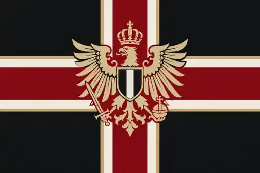

진형을 고르고 아군 진영에 분대를 배치하세요.
H0 참호
H1 평지
H2 능선
전투 결과
다시 지휘
배치 준비
01:00
00:00
A 0 : 40 B

0
:
0
전투 시작
전군 진격
Ⅱ
↻
국지 지도
예비 병력
진형 선택 → 아군 진영 터치
진영당
40명
100명
200명
350명
자동 배치
지휘 모드
횡대
넓은 전열
종대
좁은 돌파
방진
사방 방어
산개
간격 확보
전술 진형
상황에 맞춰 전열을 바꾸세요
전장 도구
＋
−
◎
⌖
기본 전선 시야
아군 본진
적 본진
전군 선택
전군 진격
철수
지원
절전 모드
병사 파츠 작업실 ↗